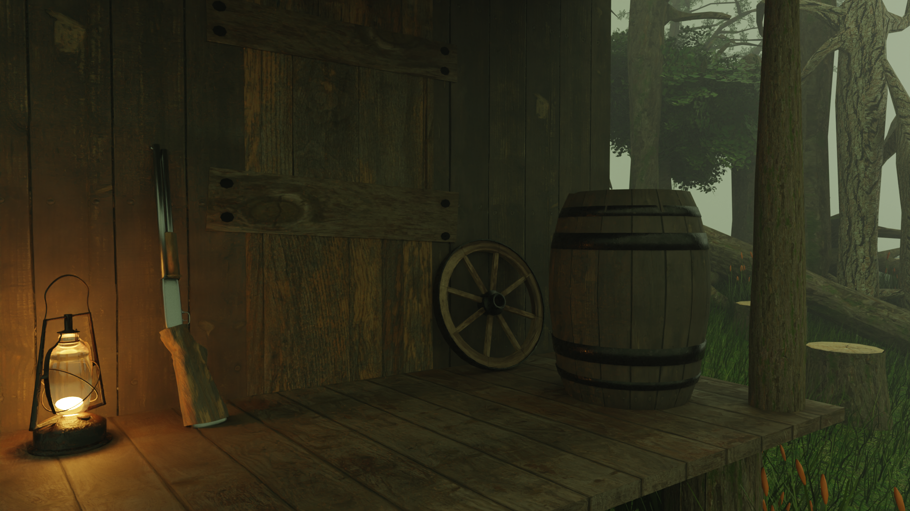
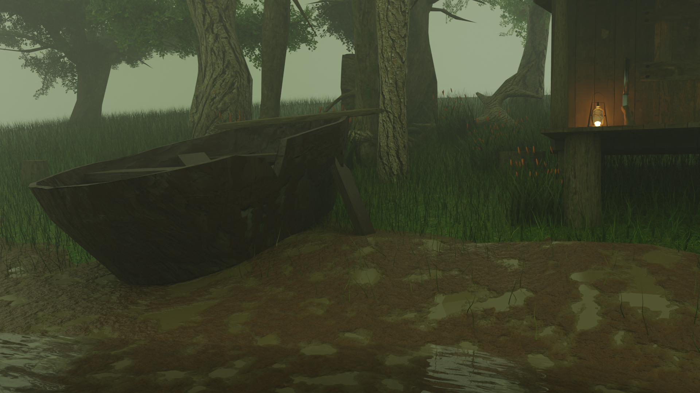
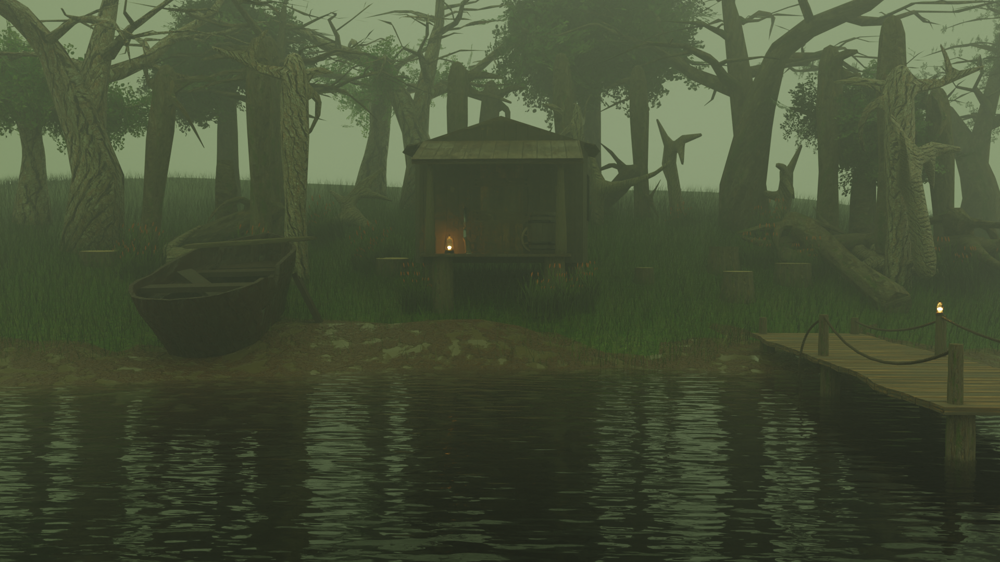
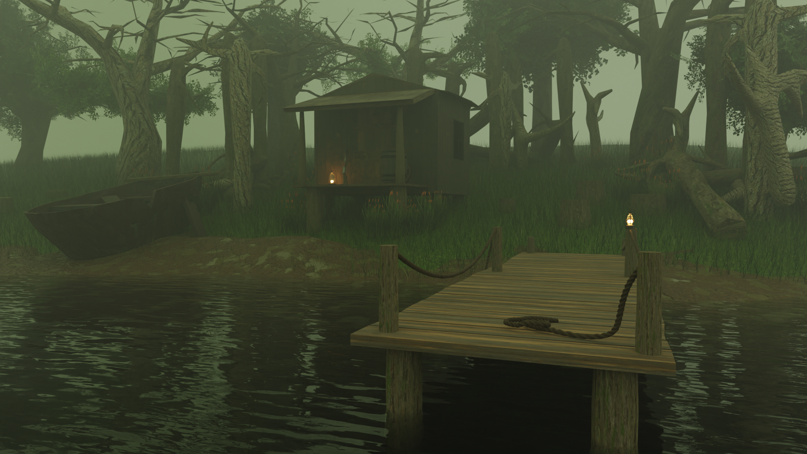

This project delves into the intrigue and beauty of 19th century Louisiana, focusing on the 3D recreation of a swamp house. We capture the essence of Southern architecture of the time, blending historical elements with the unique atmosphere of the swampy environment.




This project has been meticulously detailed, particularly focusing on props and vegetation. Each prop, from furniture to household items, has been crafted with precision to reflect the era accurately. Moreover, special attention has been dedicated to replicating the lush vegetation of the swamp environment, capturing its diversity and richness to enhance the immersive experience of the 3D model.
In addition, props have been optimized with a reduced polygon count, allowing seamless integration into a video game environment. This optimization ensures that the 3D model maintains its visual fidelity while remaining performance-friendly for gaming applications, offering players an immersive and authentic experience within the captivating world of 19th century Louisiana.